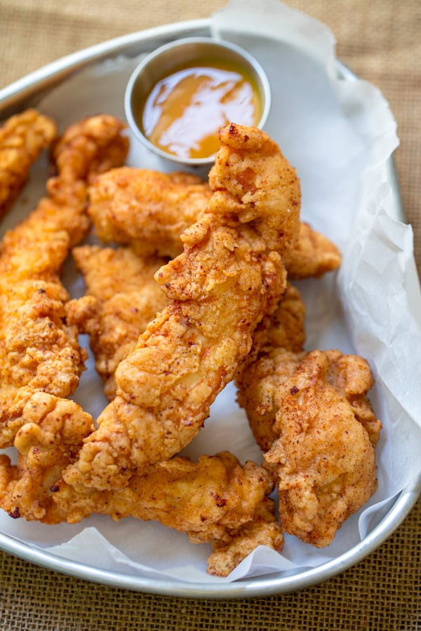

Recipe
Crispy Chicken Tender Recipe
Our story starts in a Manchester, New Hampshire restaurant that had been started by two Greek
immigrants in 1917. Still around in 1974 and run by the same family, the restaurant invented the
chicken tender after its chef “had a small piece of chicken he didn’t know what to do with.” After
cutting up a chicken, he wound up with a dangling piece of meat that had no purpose.
More History About Chicken
Tenders
"These crunchy baked chicken tenders are life changing! The secret to truly golden, truly crunchy
baked breaded chicken is to toast the breadcrumbs in the oven first. Bonus: No dirty fingers with my
quick crumbing technique!"
ingredients
- 1 1/2 cups panko breadcrumbs (Note 1)
- Oil spray
- 1 egg
- 1 tbsp mayonnaise
- 1 1/2 tbsp dijon mustard (or other mustard)
- 2 tbsp flour
- 1/2 tsp salt
- Black pepper
- 500 g/1 lb chicken tenderloins (or breast cut into 2/3″ / 1.5cm thick slices, lengthwise)
Directions
- Preheat oven to 200°C/390°F (180° fan-forced).
- Toast panko – Spread panko on a baking tray, spray with oil (spray vertically to avoid blowing
the panko off the tray), then bake for 3 to 5 minutes until light golden. Transfer to bowl.
- Place a rack on a baking tray (not critical but bakes more evenly).
- Dredge batter – Place the Batter ingredients in a bowl and whisk with a fork until combined. Add
the chicken into the Batter and toss to coat.

Video:
Chicken Tender Video
Reference List
Schwartz, Published by Elaine. “The Chicken Tender History That Economists Love.” Econlife, 7 Oct.
2024, econlife.com/2024/10/chicken-tender-history/.